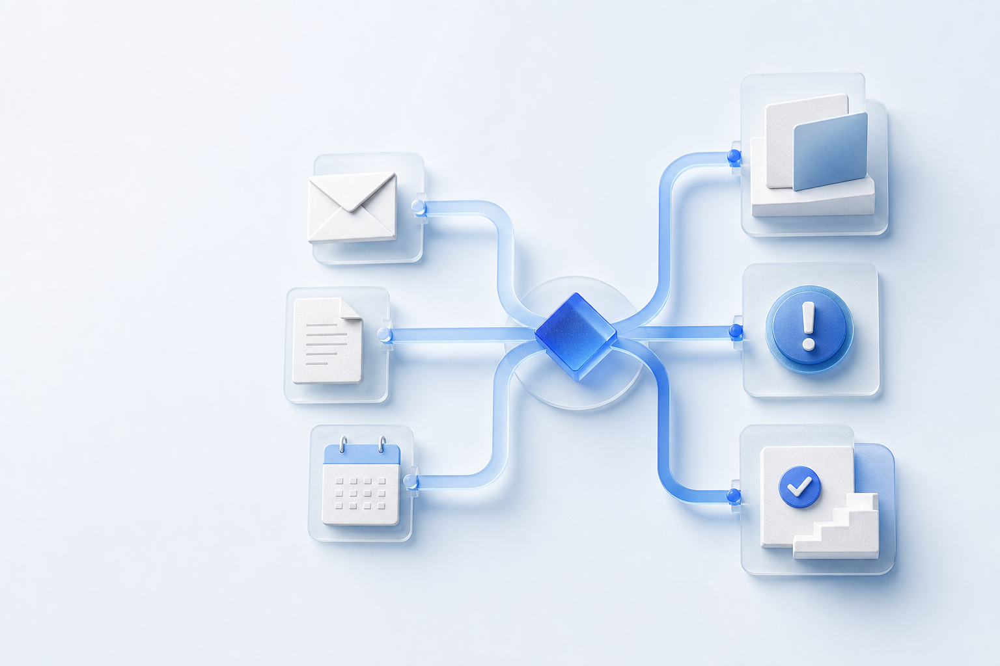

LeadCRMSeguimiento
Automatización de procesos B2B
Automatiza lo que te impide crecer
Procesos más fluidos para que tu equipo se centre en lo que importa.

Elige un área
Dónde empezar
Ventas: convierte cada nueva oportunidad en un siguiente paso claro, sin depender de recordatorios manuales.
Primera orientación
Empieza por el proceso, no por la herramienta.
Describe una fricción real. Te ayudaremos a separar lo repetitivo de aquello que necesita criterio humano.
La orientación funciona en tu navegador. El texto no se guarda ni se envía.
Posibilidades
Distintos procesos. La misma idea: menos fricción.
Estos recorridos son ejemplos de partida, no un catálogo cerrado. La solución se adapta a cómo trabaja tu equipo.
Correo / documentoExtracciónAsignaciónAviso
Solicitud / pagoVerificaciónAcceso / respuesta
También puede aplicarse a reporting, facturas, onboarding, coordinación de contenidos y otros procesos donde hoy se repiten tareas o se pierde información.
Cuantifica el punto de partida
¿Cuánto trabajo repetitivo hay detrás?
Una estimación sencilla ayuda a priorizar. No es una promesa de ahorro: es una forma de poner dimensión al proceso antes de intervenir.
Valor anual del tiempo dedicado
62.400 € 2.080 horas al año. Estimación orientativa antes de analizar qué parte del proceso es realmente automatizable.El método Llestia
Avanzar con criterio, no por impulso.
Una secuencia sencilla para mejorar lo que importa y comprobar que funciona.
Detectar
Entender el proceso, sus fricciones y las excepciones que hoy absorben al equipo.
Priorizar
Elegir el cambio con mejor equilibrio entre impacto, esfuerzo y riesgo operativo.
Implementar
Conectar las piezas con controles claros y manteniendo a las personas donde aportan valor.
Medir
Revisar el resultado, detectar desvíos y mejorar el proceso con información real.
Un proceso más claro puede cambiar cómo trabaja todo el equipo.
Cuéntanos dónde se atasca el trabajo. El primer paso es entenderlo bien.